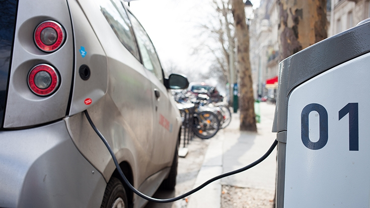

الصفحة الرئيسية
الصفحة الرئيسية
الموضوعات
عن بيئتنا

للحفاظ على مناخ صالح للعيش، يجب أن ينخفض متوسط انبعاثات الفرد سنويًا إلى حوالي 2 إلى 2.5 طن من مكافئ الانبعاثات من ثاني أكسيد الكربون بحلول عام 2030. ابدأ بهذه الإجراءات العشرة للمساعدة في معالجة أزمة المناخ. وتقليل الانبعاثات الضارة
يتم إنتاج الكثير من الكهرباء والحرارة التي نستخدمها من الفحم والنفط والغاز. قلّل من استخدام الطاقة عن طريق خفض التدفئة والتبريد، أو التحول إلى مصابيح الليد (صمام ثنائي باعث للضوء) والأجهزة الكهربائية الموفرة للطاقة، أو غسل الملابس بالماء البارد، أو تعليق الأشياء لتجف بدلاً من استخدام المجفف. يمكن أن يؤدي تحسين كفاءة الطاقة في منزلك، من خلال عزل أفضل على سبيل المثال، أو استبدال فرن الزيت أو الغاز بمضخة حرارية كهربائية إلى تقليل انبعاثات الكربون بما يصل إلى 900 كيلوغرام من مكافئ الانبعاثات من ثاني أكسيد الكربون سنويًا
الطرق عبر العالم مكتظة بالسيارات، ومعظم هذه السيارات تحرق الديزل أو البنزين. إن المشي على القدمين أو ركوب الدراجات بدلاً من ركوب السيارات سيقلل من انبعاثات غازات الدفيئة - ويحسن صحتك ولياقتك البدنية. وللمسافات الطويلة، فكّر في ركوب القطار أو الحافلة، ومارس الاشتراك في المركبات بدلا من استخدام سيارتك الفردية، كلما أمكن ذلك
إن تناول المزيد من الخضروات والفواكه والحبوب الكاملة والبقوليات والمكسرات والبذور، وتقليل استهلاك اللحوم ومنتجات الألبان يمكن أن يقلل بشكل كبير من تأثيرك على البيئة. ويقلل إنتاج الأطعمة النباتية عمومًا من انبعاثات غازات الدفيئة ويتطلب كميات أقل من الطاقة والمياه ومساحات أقل من الأراضي. يمكن أن يقلل التحول من نظام غذائي مختلط إلى نظام غذائي نباتي بصمتك الكربونية بما يصل إلى 500 كيلوغرام من مكافئ الانبعاثات من ثاني أكسيد الكربون سنويًا (أو ما يصل إلى 900 كيلوغرام بالنسبة لنظام غذائي نباتي صرف "فيغن")
تحرق الطائرات كميات كبيرة من الوقود الأحفوري، مما ينتج عنه انبعاثات كبيرة من غازات الدفيئة. لذلك فإن التقليل من الرحلات الجوية يعد من أسرع الطرق لتقليل تأثيرك على البيئة. وكلما أمكن ذلك، استخدم التواصل عبر الإنترنت، أو تنقل باستخدام القطار، أو الغ تلك الرحلة الطويلة تمامًا. يمكن أن يؤدي تقليل رحلة عودة طويلة إلى خفض انبعاثات الكربون بما يصل إلى 2 طن تقريبًا من مكافئ الانبعاثات من ثاني أكسيد الكربون .
عندما ترمي الأطعمة في القمامة، فإنك تهدر الموارد والطاقة التي استخدمت في زراعتها وإنتاجها وتعبئتها ونقلها. وعندما يتعفن الطعام في مكب النفايات، فإنه ينتج غاز الميثان، أحد غازات الدفيئة القوية. لذا، استخدم ما تشتريه وقم بتحويل أي بقايا طعام إلى سماد. يمكن أن يقلل خفض نفايات الطعام من بصمتك الكربونية بما يصل إلى 300 كيلوغرام من مكافئ الانبعاثات من ثاني أكسيد الكربون سنوياً.

تتسبب الإلكترونيات والملابس والأشياء الأخرى التي نشتريها في انبعاثات الكربون في كل مرحلة من مراحل الإنتاج، من استخراج المواد الخام إلى التصنيع ونقل البضائع إلى السوق. لحماية مناخنا، اشترِ أشياء أقل، واشتر الأشياء المستعملة، وأصلح ما يمكنك إصلاحه، وأعد تدوير ما لديك. ينتج كل كيلوغرام من المنسوجات حوالي 17 كيلوغراماً من مكافئ الانبعاثات من ثاني أكسيد الكربون. يمكن أن يخفض شراء عدد أقل الملابس الجديدة وغيرها من السلع الاستهلاكية من انبعاثات الكربون ويقلل أيضًا من النفايات.

اسأل شركة المرافق الخاصة بك عما إذا كانت الطاقة التي تستخدمها في منزلك تأتي من النفط أو الفحم أو الغاز. وإن أمكن، انظر إذا كان من الممكن التحول إلى مصادر متجددة مثل الرياح أو الطاقة الشمسية. أو قم بتركيب الألواح الشمسية على سقف منزلك لتوليد الطاقة التي تستخدمها. يمكن أن يؤدي تحويل الطاقة في منزلك من تلك المستمدة من النفط أو الغاز أو الفحم إلى مصادر الطاقة المتجددة، مثل الرياح أو الطاقة الشمسية، إلى تقليل انبعاثات الكربون بما يصل إلى 1.5 طن من مكافئ الانبعاثات من ثاني أكسيد الكربون سنويًا.
إذا كنت تخطط لشراء سيارة، فكر في شراء سيارة كهربائية، حيث هناك الآن أنواع أرخص وأكثر تطرح في السوق. في العديد من البلدان، تساعد السيارات الكهربائية في الحد من تلوث الهواء وتسبب انبعاثات غازات الدفيئة أقل بكثير من المركبات التي تعمل بالغاز أو الديزل. لكن لا تزال العديد من السيارات الكهربائية تعمل بالكهرباء المنتجة من الوقود الأحفوري، وتتطلب البطاريات والمحركات معادن نادرة غالبًا ما يكون لها تكاليف بيئية واجتماعية عالية. يمكن أن يؤدي التحول من سيارة تعمل بالبنزين أو الديزل إلى سيارة كهربائية إلى تقليل انبعاثات الكربون بنسبة تصل إلى 2 طن من مكافئ الانبعاثات من ثاني أكسيد الكربون سنويًا. يمكن أن توفر لك السيارة الهجينة ما يصل إلى 700 كيلوغرام من مكافئ الانبعاثات من ثاني أكسيد الكربون سنويًا.
كل شيء ندفع المال من أجله يؤثر على الكوكب. فلديك القدرة على اختيار السلع والخدمات التي تدعمها. ولتقليل تأثيرك على البيئة، اختر منتجات الشركات التي تستخدم الموارد بصورة مسؤولة، والتي تلتزم بخفض انبعاثات الغازات والنفايات. إذا كان لديك أموال يتم استثمارها من أجلك، من خلال صندوق معاشات تقاعدية على سبيل المثال، فقد يكون ذلك لدعم الوقود الأحفوري أو إزالة الغابات. التأكد من استثمار مدخراتك في أعمال مستدامة بيئيًا يمكن أن يقلل بشكل كبير من انبعاثات الكربون.
تكلم بصوت عال وشجع الآخرين على المشاركة في اتخاذ الإجراءات. فهذه إحدى أسرع الطرق وأكثرها فعالية لإحداث الفرق. تحدث إلى جيرانك وزملائك وأصدقائك وعائلتك. دع أصحاب الأعمال يعرفون أنك تدعم التغييرات الجريئة. ناشد القادة المحليين والعالميين للتحرك الآن. العمل المناخي مهمتنا جميعًا. ويعنينا جميعا. لا أحد يستطيع أن يقوم بكل العمل بمفرده - لكن يمكننا القيام به معًا.. يشير مصطلح "البصمة الكربونية" المستخدم أعلاه إلى كمية انبعاثات غازات الدفيئة المرتبطة بأنشطة الشخص. تُقاس الانبعاثات بمكافئات ثاني أكسيد الكربون CO2e، والتي لا تأخذ في الاعتبار ثاني أكسيد الكربون فحسب، بل أيضًا غازات الدفيئة الأخرى مثل الميثان وأكسيد النيتروز، عن طريق تحويلها إلى مكافئ الانبعاثات من ثاني أكسيد الكربون له نفس إمكانية الاحترار العالمي.